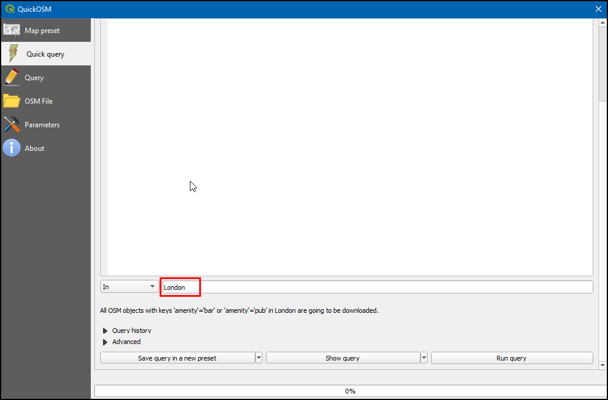
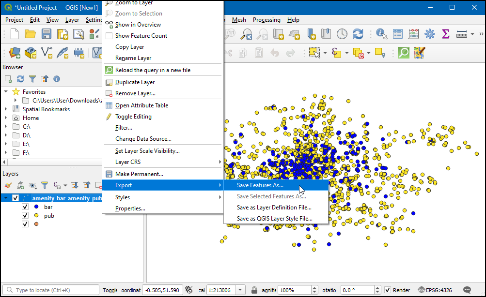

Iskanje in prenos podatkov OpenStreetMap (QGIS3)¶
Pridobivanje visokokakovostnih podatkov je bistvenega pomena za vsako nalogo GIS. Odličen vir brezplačnih podatkov z odprto licenco je OpenStreetMap(OSM) . Podatkovna zbirka OSM vsebuje vse vrste kartografskih podatkov - ulice, lokalne podatke, poligone stavb, upravne meje itd. Dostop do podatkov OSM v obliki GIS v QGIS je mogoč z vtičnikom QuickOSM. V tem priročniku je pojasnjen postopek iskanja, prenosa in uporabe tega vtičnika.
Pregled naloge¶
Iz podatkovne zbirke OpenStreetMap bomo pridobili lokacije vseh barov in pubov v Londonu in jih shranili kot vektorski sloj.
Česa se bomo še naučili¶
Kako verižiti več poizvedb v vtičniku QuickOSM.
Postopek¶
Poiščite in namestite vtičnik QuickOSM iz uradne shrambe vtičnikov QGIS. Za navodila o prenosu vtičnikov glejte Using Plugins. Prepričajte se, da imate izbrano potrditveno polje. Kliknite Close.

Po namestitvi zaženite vtičnik iz .

V zavihku Quick query lahko nastavite filter za izbiro podmnožice. Atributi elementov zemljevida v podatkovni zbirki OSM so shranjeni kot Tags. Oznake (tag) so predstavljene s ključem in vrednostjo. Ključ je tema, vrednost pa posebna oblika. Za izčrpen seznam oznak za različne vrste značilnosti glejte wiki stran OSM Map Features. Bari so predstavljeni z oznako
amenity:bar, gostilne pa z oznakoamenity:pub. Najprej bomo izbrali bare. V spustnem meniju kot oznako Key izberiteamenity.

V spustnem meniju Vrednost izberite
bar.

V najnovejši različici (v2.0.0 +) vtičnika QuickOSM lahko verižite več poizvedb. Kliknite gumb plus, nato se prikaže vrstica za izbiro poizvedbe. Kliknite na prvo izbirno polje, kjer lahko dobimo možnost
And`inOr`. And` bo izbral samo funkcijo, ki je resnična za vse poizvedbe. Or` bo izbral vse funkcije, ki so resnične za katero koli od poizvedb. S klikom naOrizberete tako funkcije bar kot pub.

V spustnem meniju kot Key izberite
amenity. Nato v spustnem meniju izberitepubkot Value.

Vnesite
Londonkot In, da omejite iskanje na območje mesta.

Razširite razdelek Advanced. V podatkovnem modelu OSM so značilnosti predstavljene z uporabo vozlišč, poti in odnosov. Ker nas zanimajo točkovni elementi, lahko izberete samo
NodeinPoints. Kliknite Run query.

Ko se poizvedba konča, preklopite na glavno okno QGIS. Na plošči Layers boste videli novo plast z imenom
amenity_bar_amenity_pub_London. Na delovni površini bodo prikazane lokacije barov in pubov, ki so bili izločeni.

Odprite tabelo atributov plasti. V njej so
2091lastnosti. Stolpec amenity vsebuje kategorijo, ali je značilnostpubalibar. Z uporabo tega kategoričnega stolpca oblikujmo slog našega sloja.

Kliknite ikono Open the Layer Styling panel, izberite
Categorized, nato v polju Value izberiteamenityin kliknite Classify. Zdaj bo sloj oblikovan z dvema barvama, ki bosta vsebovali takobarskotpubs.

Zdaj desno kliknite na sloj, za izvoz sloja kot geopaketa.

V pogovornem oknu Save Vector Layer as… v polju Format izberite
GeoPackage, v polju File name kliknite...in poiščite mapo, kamor želite shraniti podatke, ter imenujte rezultatlondon.gpkg. V polje Layer name vnesitebar_and_pubs. Kliknite OK.

Zdaj bo na platno dodan sloj geopaketa
london_bar_and_pubs.

If you want to give feedback or share your experience with this tutorial, please comment below. (requires GitHub account)